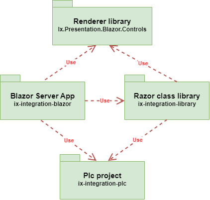
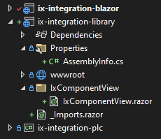
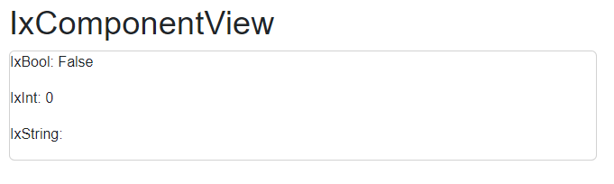
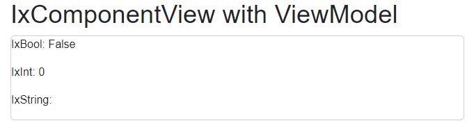

External libraries
External libraries can store user defined views in different presentation types, which then can be dynamically rendered.
This file describes how to create external library and connect it to the PLC project. Look at integration-blazor project example.
Make sure Blazor server project and PLC projects are created.
Razor class library setup
1. Create library
Create Razor class library in your solution.
2. Add references
Install
Ix.Presentation.Blazor.Controlsnuget package or if you are using raw projects, add reference toIx.Presentation.Blazor.Controlsproject.Add reference from Razor Class library to PLC project.
In Blazor Server app, add reference to newly created Razor class library.
Dependency graph should look like this:

3. Add namespace
Add namespace of renderer to _Imports.razor in razor class library.
@using Ix.Presentation.Blazor.Controls.RenderableContent
4. Add renderable attribute
Add RenderableBlazorAssemblyAttribute to Razor class library.
- Create folder named
Properties - Inside folder create
AssemblyInfo.csclass - Copy following code into
AssemblyInfo.csclass:
using System.Reflection;
using Ix.Presentation.Blazor.Attributes;
[assembly: RenderableBlazorAssemblyAttribute()]
Thanks to this attribute, renderer will load assembly of created class library and it is able to look for custom defined views.
Create custom view
1. Create PLC structure and its instance
CLASS ixcomponent
VAR PUBLIC
{#ix-set:AttributeName = "My integer"}
my_int : INT;
{#ix-set:AttributeName = "My string"}
my_string : STRING;
{#ix-set:AttributeName = "My bool"}
my_bool : BOOL;
END_VAR
END_CLASS
ixcomponent_instance: ixcomponent;
Build plc project with apax build and compile it with apax ixc command.
2. Create IxComponentView in Razor class library
- Create folder with name
IxComponentView. - Create
IxComponentView.razorclass inside folder. - Define your view.
@namespace Ix.Presentation.Blazor.Controls.Templates
@inherits RenderableComplexComponentBase<ixcomponent>
<h1>IxComponentView</h1>
<div class="card">
<p>IxBool: @Component.my_bool.Cyclic</p>
<p>IxInt: @Component.my_int.Cyclic</p>
<p>IxString: @Component.my_string.Cyclic</p>
</div>
@code{
protected override void OnInitialized()
{
UpdateValuesOnChange(Component);
}
}
Note: If your plc variable is declared in global namespace, Ix.Presentation.Blazor.Controls.Templates namespace must be used to correctly locate view.
If you plc variable is declared in your own namespace, make sure namespace of custom view is the same as the namespace in plc file.
At the end, structure of external library should look like this:

Render custom component in your application
<RenderableContentControl Context="@Entry.Plc.test_example.ixcomponent_instance"/>
If everything was done correctly, custom view defined in external library should be rendered.

ViewModel approach
Renderer also supports injecting view-model classes into views. This enables to create custom components with MVVM pattern, where component logic can be placed into viewmodel class. Therefore, the code will be less coupled and more testable.
1. Create IxComponentServiceViewModel folder
Create IxComponentServiceView.razor file and IxComponentViewModel.cs file inside folder.
2. Define your viewmodel
Make sure, that viewmodel inherits from RenderableViewModelBase.
Copy following code into IxComponentViewModel.cs viewmodel class.
using Ix.Presentation;
namespace ix_integration_library.IxComponentServiceViewModel
{
public class IxComponentServiceViewModel : RenderableViewModelBase
{
public IxComponentServiceViewModel()
{
}
public ixcomponent Component { get; set; }
public override object Model { get => this.Component; set { this.Component = value as ixcomponent; } }
}
}
Note: Replace namespace with namespace of your plc library.
Copy following code into IxComponentServiceView.razor file. Make sure, that RenderableViewModelComponentBase class is inherited with generic type parameter of your viewmodel.
@namespace Ix.Presentation.Blazor.Controls.Templates
@using ix_integration_library.IxComponentServiceViewModel
@inherits RenderableViewModelComponentBase<IxComponentViewModel>
<h1>IxComponentView with ViewModel</h1>
<div class="card">
<p>IxBool: @ViewModel.Component.my_bool.Cyclic</p>
<p>IxInt: @ViewModel.Component.my_int.Cyclic</p>
<p>IxString: @ViewModel.Component.my_string.Cyclic</p>
</div>
@code {
protected override void OnInitialized()
{
UpdateValuesOnChange(ViewModel.Component);
}
}
Note: viewmodel properties and variables can be accessed with inherited ViewModel variable.
3. Render created component
<RenderableContentControl
Presentation="Service"
Context="@Entry.Plc.test_example.ixcomponent_instance" />
